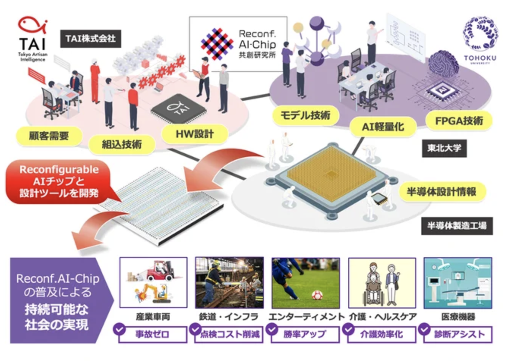
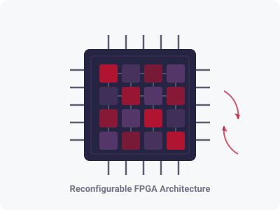
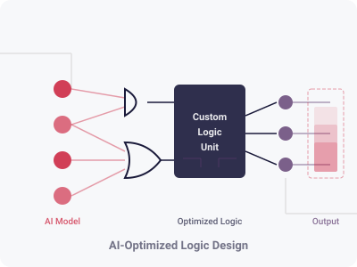

A joint initiative by Tohoku University and Tokyo Artisan Intelligence (TAI),
advancing next-generation reconfigurable semiconductor chips for AI.
With the rapid advancement of AI technologies, the demand for high-performance and flexible semiconductor chips is growing. The Reconfigurable AI-Chip Co-Creation Laboratory is a collaborative research initiative between Tohoku University and Tokyo Artisan Intelligence (TAI), focusing on the research and development of next-generation AI chips utilizing reconfigurable devices such as FPGAs.
By combining cutting-edge academic research with industry implementation expertise, we aim to realize high-efficiency, low-power AI inference and training architectures. From the intersection of semiconductors and AI, we co-create new value.

Leveraging the flexible reconfiguration capabilities of FPGAs, we conduct research and development on high-efficiency accelerator architectures that support diverse AI models. By dynamically generating circuits optimized for neural network structures, we achieve high throughput and low power consumption for both inference and training.

We study design methodologies for custom logic circuits specialized in AI processing. By optimizing the trade-offs between computational precision and circuit area, we explore chip architectures applicable to a wide range of use cases from edge to cloud.

Tohoku University, Aobayama Campus
468-1 Aramaki Aza Aoba, Aoba-ku, Sendai, Miyagi 980-0845, Japan
Email: info@example.com